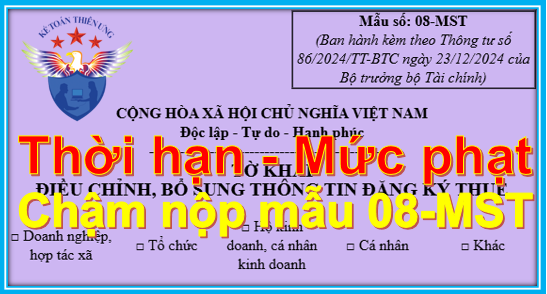

Quy định về thời Hạn nộp mẫu 08/MST - Tờ khai điều chỉnh, bổ sung thông tin đăng ký thuế theo Thông tư 86/2024/TT-BTC; Các trường hợp phải nộp Mẫu 08/MST; Mức phạt chậm nộp mẫu 08/MST.
Khi nào phải nộp Mẫu 08/MST cho cơ quan thuế:
- Người nộp thuế khi có thay đổi thông tin đăng ký thuế.
- Người nộp thuế là cá nhân có thay đổi thông tin đăng ký thuế của bản thân và người phụ thuộc
=> Chi tiết các trường hợp, các bạn xem bên dưới đây nhé:
----------------------------------------------------------------------
I, Đối tượng đăng ký thuế:
Theo Khoản 2 Điều 4 Thông tư 86/2024/TT-BTC quy định Đối tượng đăng ký thuế:
2. Người nộp thuế thuộc đối tượng thực hiện đăng ký thuế trực tiếp với cơ quan thuế, bao gồm:
a) Doanh nghiệp hoạt động trong các lĩnh vực chuyên ngành không phải đăng ký doanh nghiệp qua cơ quan đăng ký kinh doanh theo quy định của pháp luật chuyên ngành (sau đây gọi là Tổ chức kinh tế).
------------------------------------------------------------------------------------
II, Hồ sơ thay đổi thông tin đăng ký thuế:
Căn cứ theo Điều 10 Thông tư 86/2024/TT-BTC quy định về Địa điểm nộp và hồ sơ thay đổi thông tin đăng ký thuế
1. Thay đổi thông tin đăng ký thuế nhưng không làm thay đổi cơ quan thuế quản lý trực tiếp
a) Người nộp thuế đăng ký thuế cùng với đăng ký doanh nghiệp, đăng ký hợp tác xã, đăng ký kinh doanh khi có thay đổi thông tin đăng ký thuế thì thực hiện thay đổi thông tin đăng ký thuế cùng với việc thay đổi nội dung đăng ký doanh nghiệp, đăng ký hợp tác xã, đăng ký kinh doanh.
b) Người nộp thuế theo quy định tại điểm a, b, c, d, đ, e, h, n khoản 2 Điều 4 Thông tư này nộp hồ sơ đến cơ quan thuế quản lý trực tiếp như sau:
b.1) Hồ sơ thay đổi thông tin đăng ký thuế của người nộp thuế theo quy định tại điểm a, b, c, đ, h, n khoản 2 Điều 4 Thông tư này, gồm:
- Tờ khai điều chỉnh, bổ sung thông tin đăng ký thuế mẫu 08-MST ban hành kèm theo Thông tư này;
- Bản sao Giấy phép thành lập và hoạt động, hoặc Giấy chứng nhận đăng ký hoạt động đơn vị phụ thuộc, hoặc Quyết định thành lập, hoặc Giấy phép tương đương do cơ quan có thẩm quyền cấp nếu thông tin trên các Giấy tờ này có thay đổi.
b.2) Hồ sơ thay đổi thông tin đăng ký thuế của người nộp thuế theo quy định tại điểm d khoản 2 Điều 4 Thông tư này, gồm: Tờ khai điều chỉnh, bổ sung thông tin đăng ký thuế mẫu 08-MST ban hành kèm theo Thông tư này.
b.3) Hồ sơ thay đổi thông tin đăng ký thuế của nhà cung cấp ở nước ngoài không có cơ sở thường trú tại Việt Nam quy định tại điểm e khoản 2 Điều 4 Thông tư này thực hiện theo quy định tại Điều 76 Thông tư số 80/2021/TT-BTC.
c) Người nộp thuế là nhà thầu, nhà đầu tư tham gia hợp đồng dầu khí quy định tại điểm h khoản 2 Điều 4 Thông tư này khi chuyển nhượng phần vốn góp trong tổ chức kinh tế hoặc chuyển nhượng một phần quyền lợi tham gia hợp đồng dầu khí, nộp hồ sơ thay đổi thông tin đăng ký thuế tại Cục Thuế nơi người điều hành đặt trụ sở hoặc tại Cục Thuế doanh nghiệp lớn trong trường hợp người điều hành được phân công cho Cục Thuế doanh nghiệp lớn quản lý.
Hồ sơ thay đổi thông tin đăng ký thuế, gồm: Tờ khai điều chỉnh, bổ sung thông tin đăng ký thuế mẫu 08-MST ban hành kèm theo Thông tư này.
a) Người nộp thuế đăng ký thuế cùng với đăng ký doanh nghiệp, đăng ký hợp tác xã, đăng ký kinh doanh khi có thay đổi địa chỉ trụ sở làm thay đổi cơ quan thuế quản lý trực tiếp:
a.1) Người nộp thuế nộp hồ sơ thay đổi cho cơ quan thuế quản lý trực tiếp (cơ quan thuế nơi chuyển đi) để thực hiện các thủ tục về thuế trước khi đăng ký thay đổi địa chỉ trụ sở đến cơ quan đăng ký kinh doanh.
Hồ sơ nộp tại cơ quan thuế nơi chuyển đi, gồm: Tờ khai điều chỉnh, bổ sung thông tin đăng ký thuế mẫu số 08-MST ban hành kèm theo Thông tư này.
a.2) Sau khi nhận được Thông báo về việc người nộp thuế chuyển địa điểm mẫu số 09-MST ban hành kèm theo Thông tư này của cơ quan thuế nơi chuyển đi, người nộp thuế thực hiện đăng ký thay đổi địa chỉ trụ sở tại cơ quan đăng ký kinh doanh theo quy định của pháp luật về đăng ký doanh nghiệp, đăng ký hợp tác xã, đăng ký kinh doanh.
b) Người nộp thuế thuộc diện đăng ký thuế trực tiếp với cơ quan thuế theo quy định tại điểm a, b, c, d, đ, h, n khoản 2 Điều 4 Thông tư này khi có thay đổi địa chỉ trụ sở làm thay đổi cơ quan thuế quản lý trực tiếp thực hiện như sau:
b.1) Tại cơ quan thuế nơi chuyển đi
Người nộp thuế nộp hồ sơ thay đổi thông tin đăng ký thuế cho cơ quan thuế quản lý trực tiếp (cơ quan thuế nơi chuyển đi). Hồ sơ thay đổi thông tin đăng ký thuế cụ thể như sau:
- Đối với người nộp thuế theo quy định tại điểm a, b, c, đ, h, n khoản 2 Điều 4 Thông tư này, gồm:
+ Tờ khai điều chỉnh, bổ sung thông tin đăng ký thuế mẫu số 08-MST ban hành kèm theo Thông tư này;
+ Bản sao Giấy phép thành lập và hoạt động, hoặc Văn bản tương đương do cơ quan có thẩm quyền cấp trong trường hợp địa chỉ trên các Giấy tờ này có thay đổi.
- Đối với người nộp thuế theo quy định tại điểm d khoản 2 Điều 4 Thông tư này, gồm: Tờ khai điều chỉnh, bổ sung thông tin đăng ký thuế mẫu số 08-MST ban hành kèm theo Thông tư này.
b.2) Tại cơ quan thuế nơi chuyển đến
b.2.1) Người nộp thuế nộp hồ sơ thay đổi thông tin đăng ký thuế tại cơ quan thuế nơi chuyển đến trong thời hạn 10 (mười) ngày làm việc kể từ ngày cơ quan thuế nơi chuyển đi ban hành Thông báo về việc người nộp thuế chuyển địa điểm mẫu số 09-MST ban hành kèm theo Thông tư này. Cụ thể:
- Người nộp thuế theo quy định tại điểm a, b, d, đ, h khoản 2 Điều 4 Thông tư này (trừ tổ hợp tác) nộp hồ sơ tại Chi cục Thuế khu vực nơi đặt trụ sở mới.
- Người nộp thuế là tổ hợp tác theo quy định tại điểm b khoản 2 Điều 4 Thông tư này nộp hồ sơ tại Đội thuế thuộc Chi cục Thuế khu vực nơi đặt trụ sở mới.
- Người nộp thuế theo quy định tại điểm c, n khoản 2 Điều 4 Thông tư này nộp hồ sơ tại Chi cục Thuế khu vực nơi người nộp thuế đóng trụ sở (tổ chức do cơ quan trung ương và cơ quan cấp tỉnh ra quyết định thành lập); tại Đội thuế thuộc Chi cục Thuế khu vực nơi tổ chức đóng trụ sở (tổ chức không do cơ quan trung ương và cơ quan cấp tỉnh ra quyết định thành lập).
b.2.2) Hồ sơ thay đổi thông tin đăng ký thuế, gồm:
- Văn bản đăng ký chuyển địa điểm tại cơ quan thuế nơi người nộp thuế chuyển đến mẫu số 30/ĐK-TCT ban hành kèm theo Thông tư này.
- Bản sao Giấy phép thành lập và hoạt động, hoặc Văn bản tương đương do cơ quan có thẩm quyền cấp trong trường hợp địa chỉ trên các Giấy tờ này có thay đổi.”
Xem thêm: Thủ tục chuyển địa điểm kinh doanh.
-------------------------------------------------------------------------------------
3. Đối với cá nhân quy định tại điểm k, l, n ở trên khi có thay đổi thông tin đăng ký thuế của bản thân và người phụ thuộc (bao gồm cả trường hợp thay đổi cơ quan thuế quản lý trực tiếp) nộp hồ sơ cho cơ quan chi trả thu nhập hoặc Chi cục Thuế, Chi cục Thuế khu vực nơi cá nhân đăng ký thường trú hoặc tạm trú (trường hợp cá nhân không làm việc tại cơ quan chi trả thu nhập hoặc không ủy quyền cho cơ quan chi trả thu nhập) như sau:
a) Hồ sơ thay đổi thông tin đăng ký thuế đối với trường hợp nộp qua cơ quan chi trả thu nhập, gồm: Văn bản ủy quyền mẫu số 41/UQ-ĐKT ban hành kèm theo Thông tư này (đối với trường hợp chưa có văn bản ủy quyền cho cơ quan chi trả thu nhập trước đó). Trường hợp cá nhân hoặc người phụ thuộc thuộc trường hợp cơ quan thuế cấp mã số thuế theo quy định tại điểm a khoản 4 Điều 5 Thông tư này thì nộp kèm theo bản sao Hộ chiếu có thay đổi thông tin liên quan đến đăng ký thuế của cá nhân hoặc người phụ thuộc.
Cơ quan chi trả thu nhập có trách nhiệm tổng hợp thông tin thay đổi của cá nhân vào Tờ khai đăng ký thuế mẫu số 05-ĐK-TH-TCT, thông tin thay đổi của người phụ thuộc vào Tờ khai đăng ký thuế mẫu số 20-ĐK-TH-TCT ban hành kèm theo Thông tư này gửi cơ quan thuế quản lý trực tiếp cơ quan chi trả thu nhập.
b) Hồ sơ thay đổi thông tin đăng ký thuế đối với trường hợp nộp trực tiếp tại cơ quan thuế, gồm: Tờ khai điều chỉnh, bổ sung thông tin đăng ký thuế mẫu số 08-MST hoặc mẫu số 20-ĐK-TCT ban hành kèm theo Thông tư này. Trường hợp cá nhân hoặc người phụ thuộc thuộc trường hợp cơ quan thuế cấp mã số thuế theo quy định tại điểm a khoản 4 Điều 5 Thông tư này thì nộp kèm theo bản sao Hộ chiếu còn hiệu lực của cá nhân hoặc người phụ thuộc trong trường hợp thông tin đăng ký thuế trên giấy tờ này có thay đổi.
4. Đối với người nộp thuế là cá nhân nước ngoài không cư trú tại Việt Nam quy định tại điểm e ở trên trực tiếp đăng ký thuế thì thực hiện nộp hồ sơ thay đổi thông tin đăng ký thuế theo quy định tại Thông tư của Bộ Tài chính hướng dẫn thi hành một số điều của Luật Quản lý thuế.
-----------------------------------------------------------------------------------
Thời hạn nộp Mẫu 08/MST:
Người nộp thuế nộp hồ sơ thay đổi thông tin đăng ký thuế tại cơ quan thuế nơi chuyển đến trong thời hạn 10 (mười) ngày làm việc kể từ ngày cơ quan thuế nơi chuyển đi ban hành Thông báo về việc người nộp thuế chuyển địa điểm mẫu số 09-MST ban hành kèm theo Thông tư này
------------------------------------------------------------------------------
Mức phạt chậm nộp Mẫu 08/MST:
Căn cứ theo Điều 11 Nghị định 125/2020/NĐ-CP quy định Mức phạt hành vi vi phạm về thời hạn thông báo thay đổi thông tin trong đăng ký thuế, cụ thể như sau:
1. Phạt cảnh cáo đối với một trong các hành vi sau đây:
a) Thông báo thay đổi nội dung đăng ký thuế quá thời hạn quy định từ 01 đến 30 ngày nhưng không làm thay đổi giấy chứng nhận đăng ký thuế hoặc thông báo mã số thuế mà có tình tiết giảm nhẹ;
b) Thông báo thay đổi nội dung đăng ký thuế quá thời hạn quy định từ 01 ngày đến 10 ngày làm thay đổi giấy chứng nhận đăng ký thuế hoặc thông báo mã số thuế mà có tình tiết giảm nhẹ.
2. Phạt tiền từ 500.000 đồng đến 1.000.000 đồng đối với hành vi:
- Thông báo thay đổi nội dung đăng ký thuế quá thời hạn quy định từ 01 đến 30 ngày nhưng không làm thay đổi giấy chứng nhận đăng ký thuế hoặc thông báo mã số thuế, trừ trường hợp xử phạt theo điểm a khoản 1 nêu trên.
3. Phạt tiền từ 1.000.000 đồng đến 3.000.000 đồng đối với một trong các hành vi sau đây:
a) Thông báo thay đổi nội dung đăng ký thuế quá thời hạn quy định từ 31 đến 90 ngày nhưng không làm thay đổi giấy chứng nhận đăng ký thuế hoặc thông báo mã số thuế;
b) Thông báo thay đổi nội dung đăng ký thuế quá thời hạn quy định từ 01 ngày đến 30 ngày làm thay đổi giấy chứng nhận đăng ký thuế hoặc thông báo mã số thuế, trừ trường hợp quy định tại điểm b khoản 1 nêu trên.
4. Phạt tiền từ 3.000.000 đồng đến 5.000.000 đồng đối với một trong các hành vi sau đây:
a) Thông báo thay đổi nội dung đăng ký thuế quá thời hạn quy định từ 91 ngày trở lên nhưng không làm thay đổi giấy chứng nhận đăng ký thuế hoặc thông báo mã số thuế;
b) Thông báo thay đổi nội dung đăng ký thuế quá thời hạn quy định từ 31 đến 90 ngày làm thay đổi giấy chứng nhận đăng ký thuế hoặc thông báo mã số thuế.
5. Phạt tiền từ 5.000.000 đồng đến 7.000.000 đồng đối với một trong các hành vi sau đây:
a) Thông báo thay đổi nội dung đăng ký thuế quá thời hạn quy định từ 91 ngày trở lên làm thay đổi giấy chứng nhận đăng ký thuế hoặc thông báo mã số thuế;
b) Không thông báo thay đổi thông tin trong hồ sơ đăng ký thuế.
6. Quy định tại Điều này không áp dụng đối với trường hợp sau đây: (Khoản này được sửa đổi bởi Khoản 9 Điều 1 Nghị định 310/2025/NĐ-CP có hiệu lực từ ngày 16/01/2026)
a) Cá nhân không kinh doanh đã được cấp mã số thuế thu nhập cá nhân chậm thay đổi thông tin theo thẻ căn cước, căn cước điện tử;
b) Cơ quan chi trả thu nhập chậm thông báo thay đổi thông tin khi người nộp thuế thu nhập cá nhân là các cá nhân ủy quyền quyết toán thuế thu nhập cá nhân có thay đổi thông tin theo thẻ căn cước, căn cước điện tử;
c) Không thông báo hoặc thông báo thay đổi thông tin trên hồ sơ đăng ký thuế về địa chỉ người nộp thuế quá thời hạn quy định do thay đổi địa giới hành chính theo Nghị quyết của Ủy ban thường vụ Quốc hội hoặc Nghị quyết của Quốc hội.”.
Như vậy: Trường hợp Người lao động thay đổi từ Chứng minh nhân dân sang thẻ căn cước công dân và ủy quyền quyết toán thuế TNCN cho DN thì sẽ không bị phạt chậm nộp thông báo thay đổi đăng ký thuế.
----------------------------------------------------------------------------------------------
Tải mẫu 08/MST thì có thể tải về tại đây:
Kế toán Diệu Tâm xin chúc các bạn thành công!
-------------------------------------------
